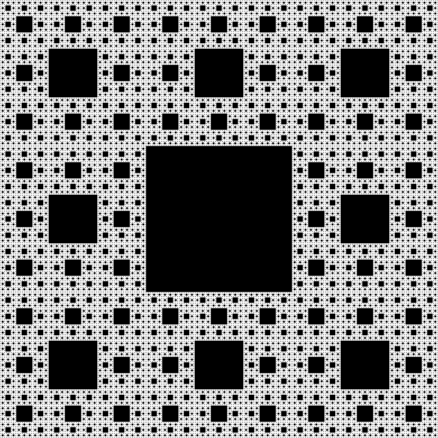
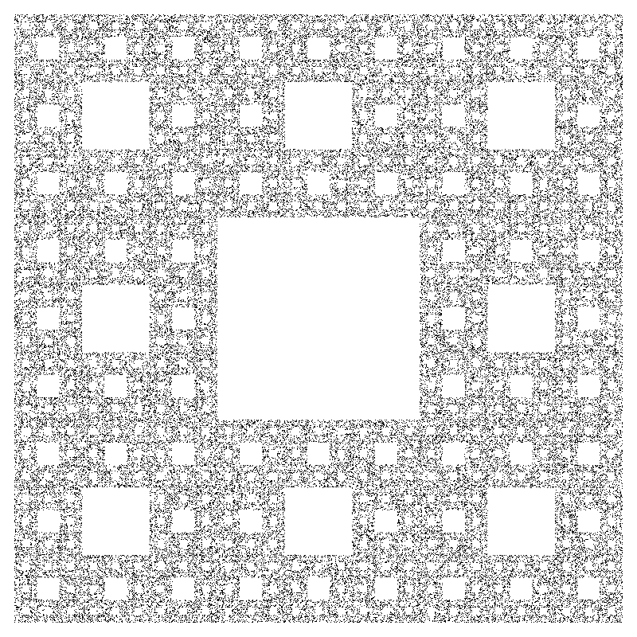
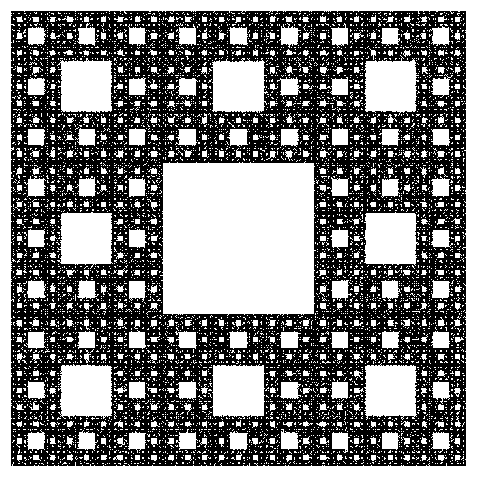
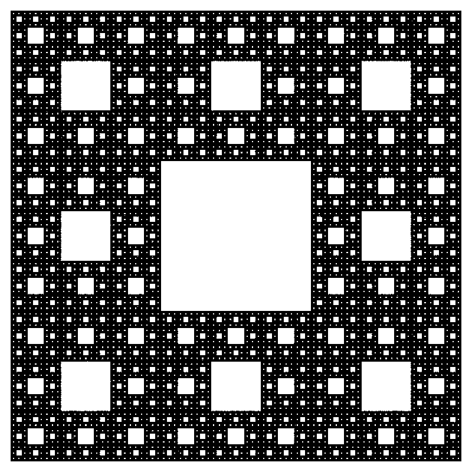
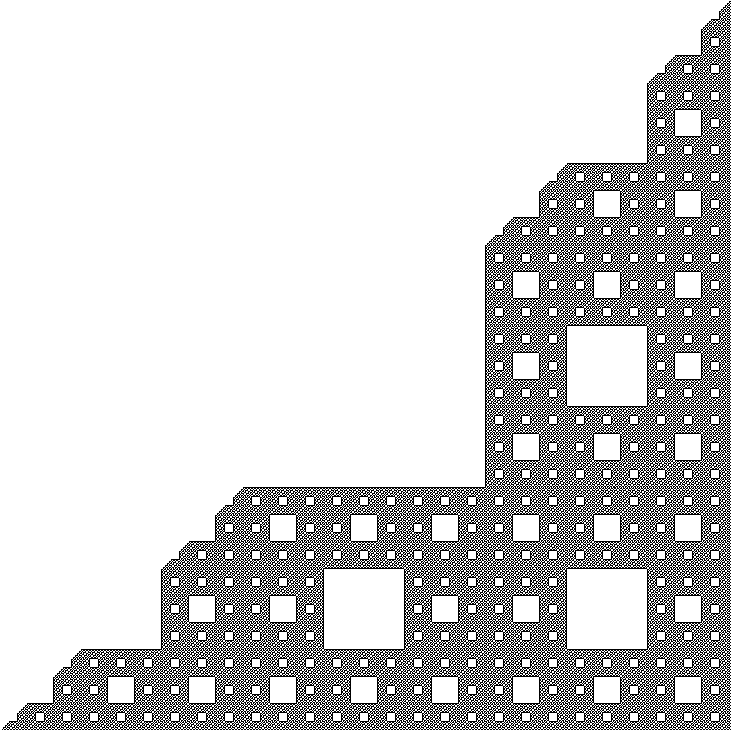
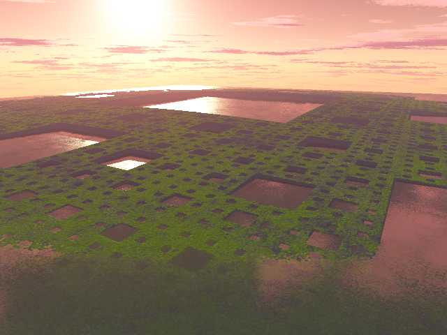

3 ways of Creating the Sierpinski Carpet
Developed by Roger Bagula
Images by
Paul Bourke
July 2004
Hadamard matrix

IFS (Iterated Function System

100,000 points

1,000,000 points

10,000,000 points
Pascals triangle


Rendered as a "island"